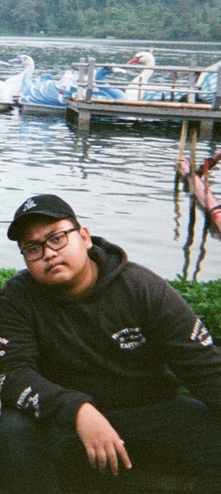

Tentang Saya
Foto Saya:
Halo nama saya Fauzi Anwar Rizqullah , asal saya dari Surabaya. Sekarang saya berkuliah di Institut Teknologi Sepuluh Nopember Surabaya.
Link Tugas Saya
Ini adalah link tugas Pemograman Web saya , ada dua tugas yaitu tugas CSS dan Bootstrap.
Dunia Perkuliahan
Komunal, 4 Februari, 2020

"Rek jangan telat komunal nya ya !"
Adalah salah satu kalimat yang sering diucapkan ketika masa kuliah kala itu dan terkadang banyak anak yang tidak menyepelekan kalimat ini , namun dimasa kuliah online saat ini , kita baru merasa bahwa acara yang seperti ini sangat penting bagi kita , betapa berharganya waktu untuk bisa bersendau gurau dengan teman kita , bisa ngobrol dan nongkrong bareng dengan teman kita , merupakan salah satu cara untuk melepas penat.
Student Exchange
Australia, 23 Mei, 2018

Lorne P-12 College
Jika orang menanyakan pengalaman ku yang paling berkesan , ini adalah salah satunya. Dimana aku harus memberanikan diri untuk pergi ke negeri baru yang sebelumnya pernah aku kunjungi , disini aku serba mengetahui hal baru,menyoba tinggal dengan teman baru , berusaha untuk berbicara bukan dengan bahasa sehari hari ku , mengetahui kebudayaan baru , namun disini saya juga belajar untuk berani berbicara dengan orang yang tidak dikenal , belajar mengalahkan rasa malu , belajar berpikir kritis , belajar menjadi minoritas , dan semua hal ini pasti ada manis dan pahit nya . tetapi semua menjadi pengalaman yang tidak tergantikan.